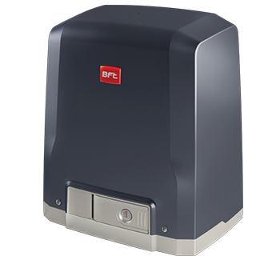
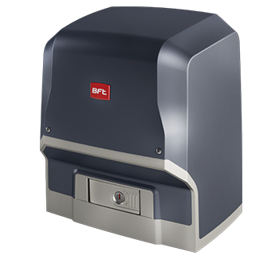
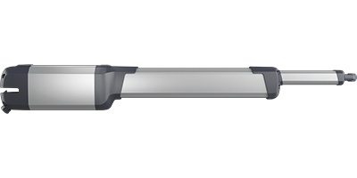
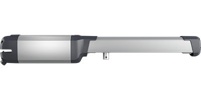
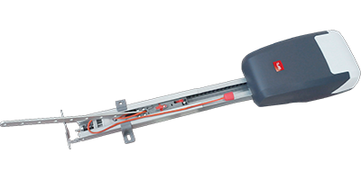

Автоматика BFT
Для откатных ворот
- Deimos AC A600
створка до 600 кг, двигатель 230В, автоматическое закрывание
- Ares BT A1000
створка до 1000 кг, двигатель 24В, интенсивное использование
Для распашных ворот
- KUSTOS BT A25
максимальная масса створки до 400 кг, двигатель 24В
- Phobos BT A40
створка до 4 м и до 500 кг., двигатель 24В
Для секционных ворот
- Tiziano 3020
высота ворот до 2,35 м, площадь 10 м.кв, усилие 600 Н, интенсивность 50%, ІР-20
- Tiziano 3620
высота ворот до 3,0 м, площадь 10 м.кв, усилие 600 Н, интенсивность 50%, ІР-20